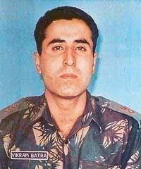

CAPTAIN VIKRAM BATRA
Captain Vikram Batra PVC (9 September 1974 – 7 July 1999) was an officer of the Indian Army. He was posthumously awarded the Param Vir Chakra, the highest Indian military decoration, for his actions during the Kargil War; on 7 July 1999, Batra was killed while fighting Pakistani troops around Area Ledge, Point 4875, in the Kargil district of erstwhile Jammu and Kashmir.